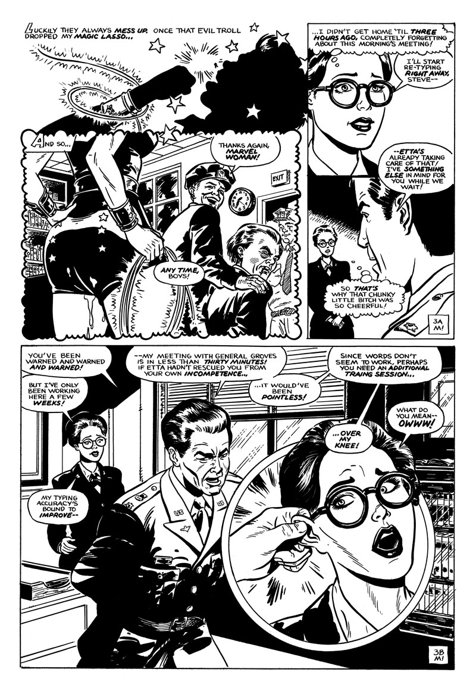

The Yeoman
(XXX; Superhero Pornography) To protect her secret identity and defend freedom as Marvel Woman, Diane Aprince takes an bare-bottom OTK spanking, gets tied up ...and more.
The Yeoman: Page 1 of 11

About This Page
"Diane Aprince" logo: Since this is a Diana story, I had to render my parody name "Diane Aprince" in the Wonder Woman logo style. Intro scroll design is straight from a 1940s Wonder Woman comic.
I started using 1970s TV show as my sole reference for backgrounds. Figuring out what the exterior top of the Main Navy Building of the War Department looked like shot that notion down. Panel 1A was the beginning of using actual 1942 historical reference for architecture, fashions, room interiors and hair styles.
The Yeoman: Page 2 of 11

About This Page
The main source of the satire comes from juxtaposing the comic book and TV show history with actual 1940s behaviors, especially gender roles.
In the 1940s origin, as an 18-year-old raised on an all-female island, she instantly attracted to the injured Steve Trevor. Once in America, she bought the identity of the real Diana Prince to stalk "keep an eye on him". Today, that's called stalking.
In this story, she's been Steve's secretary for 2 months. Her work is sloppy, due to her unpredictable Wonder Woman demands.
In page 2B, she's captured and dominated by Doctor Psycho, a misogynist with ectoplasmic powers.
Wonder Woman wasn't raped in the original comics or TV show, but did get knocked out, tied up and spanked a lot. So much so that one blogger wrote "She wouldn't get tied up so often if she didn't bring the rope."
Never traumatized by these humiliations, she blamed herself for being sloppy then figured out a solution. Then almost immediately put herself in position to get humiliated again. Wonder Woman creator William Moulton Marston used bondage imagery as a metaphor to show female superiority.
{kind=link}
Visually, the tough part was the rape scene was ergonomically feasible. Lynda Carter is pretty tall (5 feet, ten inches tall -- plus 3-inch heels). My version of Doctor Psycho is on Peter Dinklage (4 feet, 5 inches).
I specifically based my Wonder Woman on 24-year-old Lynda Carter of the 1975 pilot. She lost a few curves during the show (either from Hollywood's skinny fetish or the physical demands of starring in a weekly action show). It's worth noting that she got those curves back after the show.
The Yeoman: Page 3 of 11
About This Page
As promised, Wonder Woman eventually triumphs over the bad guy.
Drawing Steve Trevor's office was tough. The television show was next to useless as reference (The set was cheap, tiny and changed in almost every episode). I used it as a general guideline, filling in the missing pieces with interior War Department office photos.
Same for Steve Trevor. I was going to draw his hair exactly as it appeared in the show, but Lyle Waggoner's 1970s "dry look" literally didn't exist in 1942! I ended up using early 1940s Tyrone Power, Clark Gable and Errol Flynn as reference.
{kind=link}
The office dialog is almost lifted verbatim from spanking and office hijinks videos.
The Yeoman: Page 4 of 11
About This Page
This is the first stage of a crescendo of Steve and Diana's relationship. At this phase, this is a relatively normal "disciplinary office spanking", with no emotional attachment. Consistent with her Wonder Woman encounters, Diana blames herself for substandard performance. Steve is just spanking a homely, underperforming secretary.
Why Steve never recognized Diana as Wonder Woman: Diana must've been using Paradise Island magic to keep Steve from recognizing her as Wonder Woman. The glasses, Yeoman uniform and hairstyle didn't fool the TV audience. They certainly wouldn't fool a Navy Intelligence officer!
The Yeoman: Page 5 of 11
About This Page
Consciously, even while lifting her skirt to smack the panties, Steve still thinks his only objective is office discipline. However, his smacks get a little faster and harder. Steve is subconsciously turned on by touching Diana's firm, pure Amazonian rump. His increased intensity has the same effect on Diana.
Part of his lecture is lifted from The Godfather.
The Yeoman: Page 6 of 11

About This Page
Not being able to see Diana's face (her magic still hiding her Amazon beauty), Steve completely loses his mind when he discovers her wet panties.
The Yeoman: Page 7 of 11

About This Page
Diana's physique is based on Lynda Carter of the the 1975 pilot, but the black round glasses came from future episodes.
Steve's last panel speech is a little long for a Tijuana Bible, but he's under a lot of pressure from the The Manhattan Project. In early '42, there were still a lot of questions about money, manpower and materials. In this story, the impossible task of number crunching fell on Steve, who worked months of 12-18 hour days. He did his best, but worried General Groves would pounce on any errors.
The Yeoman: Page 8 of 11
About This Page
A critial element of Diana enjoying her spanking: it had to come from the right guy. Only this ideal man could -- even unwittingly -- unlock the animal passion she didn't know existed. There's plenty of modern reference material about earned submission. I just ported it to 1942.
On the other hand, this doesn't mean much to Steve. He's just using another homely secretary.
While planning this page, I discovered that an erect penis tapping a woman's chin is called a "velvet hammer".
The Yeoman: Page 9 of 11

About This Page
Canon from the 1940s comics state that Diana's absolutely powerless when bound by a man. Even then, Diana's magic still hides her true identity from Steve's mind.
The Yeoman: Page CURR_PAGE_BIG of 11
About This Page
The cartoon blowjob sound was invented by porn star Aurora Snow.
The Yeoman: Page 11 of 11

About This Page
Steve and Diana made the The Manhattan Project
meeting...with no time to spare! Seated from left to right: Seated from left to right: Major General Leslie Groves, General Philip Blankenship (from the TV show), Steve Trevor (standing), Henry L. Stimson and General General George Marshall.
Story Notes
STORY_NOTES_INFO
Tools and Materials
- 12 x 18 inch live area
- Strathmore 500 bristol smooth paper
- Speedball Super Black India Ink
- Adobe Photoshop CS3 (production, corrections)
Dave M!